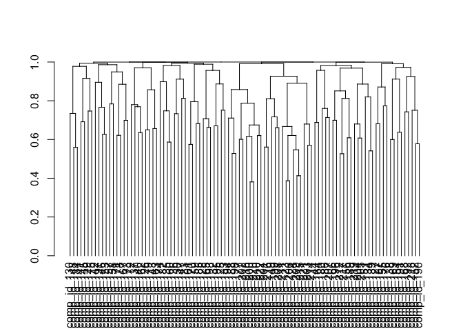

The goal of metaboprep is to:
- Read in and processes (un)targeted metabolite data, saving datasets in tab-delimited format for use elsewhere
- Provide useful summary data in the form of tab-delimited text file and a html report.
- Perform data filtering on the data set using a standard pipeline and according to user-defined thresholds.
Installation
You can install the development version of metaboprep from GitHub with:
# install.packages("pak")
pak::pak("MRCIEU/metaboprep")Example
This is a basic example which shows you how to load data and run the metaboprep quality control pipeline.
library(metaboprep)
# import data
dat <- read_metabolon(system.file("extdata", "metabolon_v1.1_example.xlsx", package = "metaboprep"), sheet="OrigScale")
# create the object
m <- Metaboprep(data = dat$data, samples = dat$samples, features = dat$features)
# run QC
m <- m |>
quality_control(source_layer = "input",
sample_missingness = 0.5,
feature_missingness = 0.3,
total_peak_area_sd = 5,
outlier_udist = 5,
outlier_treatment = "leave_be",
winsorize_quantile = 1.0,
tree_cut_height = 0.5,
pc_outlier_sd = 5,
sample_ids = NULL,
feature_ids = NULL)
#>
#> ── Starting Metabolite QC Process ──────────────────────────────────────────────
#> ℹ Validating input parameters✔ Validating input parameters [5ms]
#> ℹ Sample & Feature Summary Statistics for raw data✔ Sample & Feature Summary Statistics for raw data [436ms]
#> ℹ Copying input data to new 'qc' data layer✔ Copying input data to new 'qc' data layer [13ms]
#> ℹ Assessing for extreme sample missingness >=80% - excluding 0 sample(s)✔ Assessing for extreme sample missingness >=80% - excluding 0 sample(s) [10ms]
#> ℹ Assessing for extreme feature missingness >=80% - excluding 0 feature(s)✔ Assessing for extreme feature missingness >=80% - excluding 0 feature(s) [8ms]
#> ℹ Assessing for sample missingness at specified level of >=50% - excluding 0 sa…✔ Assessing for sample missingness at specified level of >=50% - excluding 0 sa…
#> ℹ Assessing for feature missingness at specified level of >=30% - excluding 0 f…✔ Assessing for feature missingness at specified level of >=30% - excluding 0 f…
#> ℹ Calculating total peak abundance outliers at +/- 5 Sdev - excluding 0 sample(…✔ Calculating total peak abundance outliers at +/- 5 Sdev - excluding 0 sample(…
#> ℹ Running sample data PCA outlier analysis at +/- 5 Sdev✔ Running sample data PCA outlier analysis at +/- 5 Sdev [8ms]
#> ℹ Sample PCA outlier analysis - re-identify feature independence and PC outlier…ℹ Sample PCA outlier analysis - re-identify feature independence and PC outlier… ! The stated max PCs [max_num_pcs=10] to use in PCA outlier assessment is greater than the number of available informative PCs [2]
#> ℹ Sample PCA outlier analysis - re-identify feature independence and PC outlier…✔ Sample PCA outlier analysis - re-identify feature independence and PC outlier…
#> ℹ Creating final QC dataset...✔ Creating final QC dataset... [442ms]
#> ℹ Metabolite QC Process Completed✔ Metabolite QC Process Completed [10ms]
# view
summary(m)
#> Metaboprep Object Summary
#> --------------------------
#> Samples : 100
#> Features : 100
#> Data Layers : 2
#> Layer Names : input, qc
#>
#> Sample Summary Layers : input, qc
#> Feature Summary Layers: input, qc
#>
#> Sample Annotation (metadata):
#> Columns: 8
#> Names : sample_id, neg, pos, run_day, box_id, lot, reason_excluded, excluded
#>
#> Feature Annotation (metadata):
#> Columns: 8
#> Names : feature_id, metabolite_id, platform, pathway, kegg, group_hmdb, reason_excluded, excluded
#>
#> Exclusion Codes Summary:
#>
#> Sample Exclusions:
#> Exclusion | Count
#> -----------------
#> user_excluded | 0
#> extreme_sample_missingness | 0
#> user_defined_sample_missingness | 0
#> user_defined_sample_totalpeakarea | 0
#> user_defined_sample_pca_outlier | 0
#>
#> Feature Exclusions:
#> Exclusion | Count
#> -----------------
#> user_excluded | 0
#> extreme_feature_missingness | 0
#> user_defined_feature_missingness | 0
# view tree
tree <- attr(m@feature_summary, "qc_tree")
dend <- stats::as.dendrogram(tree)
plot(dend)